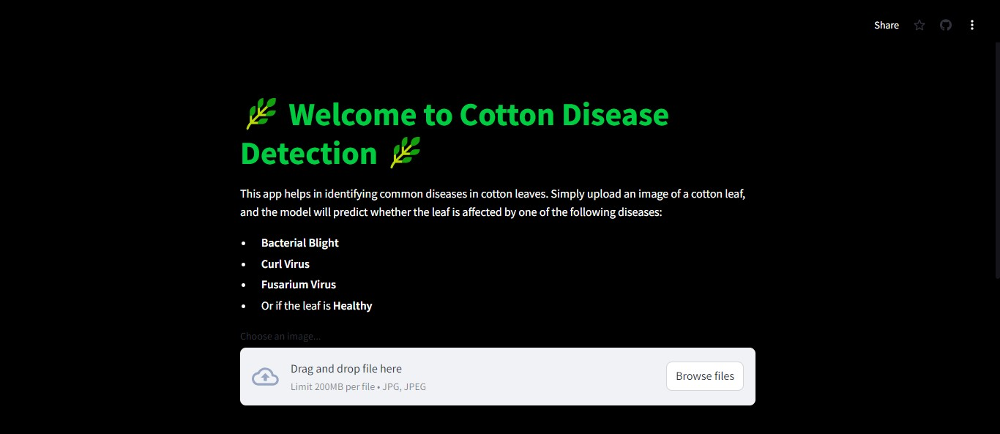
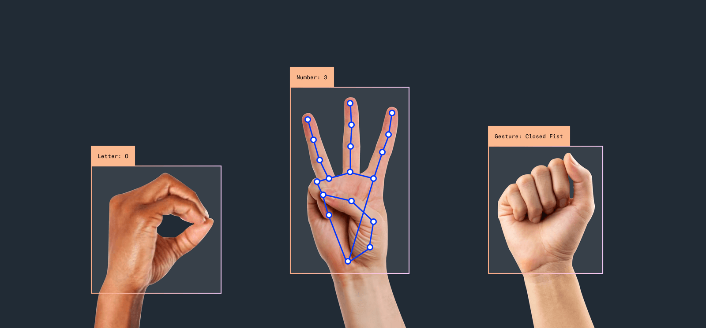

My Projects
Cotton Disease Detection App
This deep learning app is tailored for detecting common cotton leaf diseases like Bacterial Blight, Curl Virus, and Fusarium Wilt. Trained using TensorFlow, the model analyzes leaf images in real-time, delivering accurate predictions through an intuitive interface. Deployed on Streamlit, it empowers farmers and agronomists with instant insights, supporting early disease detection and targeted interventions. By enabling timely decisions, this tool helps protect cotton crops and improve yields, ensuring healthier harvests and reducing potential losses.
View ProjectHand-Gesture Detection
This project is a real-time hand gesture recognition system using MediaPipe and OpenCV. The system utilizes the MediaPipe Hands module to detect hand landmarks from live webcam footage. By analyzing the positions of key landmarks, the code recognizes various hand gestures, such as a fist, victory sign, thumbs up, thumbs down, and an open hand (e.g., "stop"). The recognized gesture is then displayed on the video feed in real time, offering an intuitive interface for gesture-based interactions. This project is ideal for applications in human-computer interaction, sign language recognition, and gesture-controlled devices.
View ProjectObject Detection

This project implements real-time object detection using the YOLOv3 model and OpenCV within a Jupyter notebook environment. The system leverages YOLOv3's deep learning architecture to detect and classify objects captured from a live webcam feed. The code loads the pre-trained YOLOv3 model, processes the video frames, and identifies objects by drawing bounding boxes around them along with their corresponding labels. The detected objects are displayed in real-time within the notebook using the `IPython.display` module. This project is well-suited for applications in real-time surveillance, autonomous systems, and interactive environments where object detection is crucial.
View Project